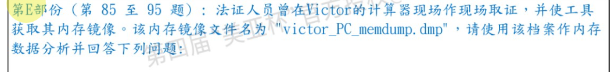
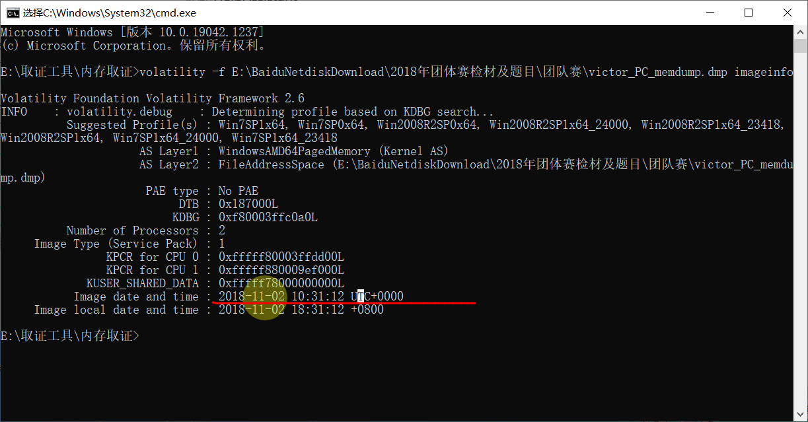
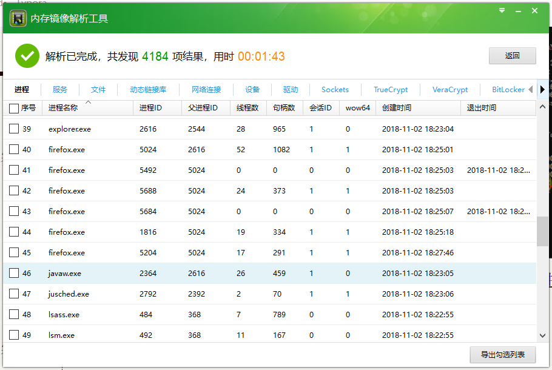
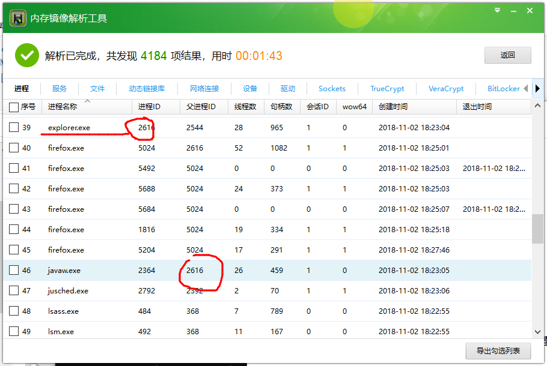
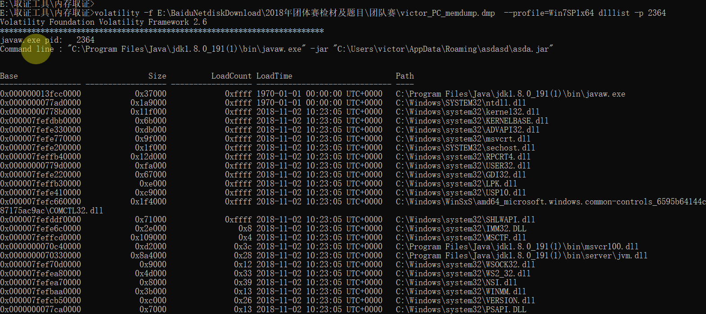
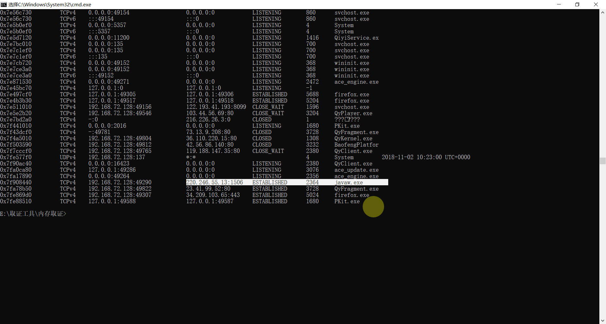
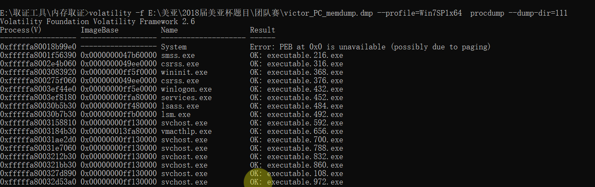
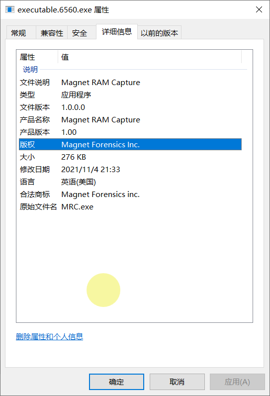
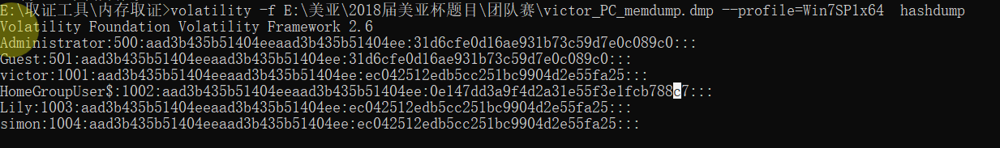

[单选题] 第E部份 (第 85 至 95 题) : 法证人员曾在Victor的计算器现场作现场取证，并使工具获取其内存镜像。该内存镜像文件名为 “victor_PC_memdump.dmp”，请使用该档案作内存数据分析并回答下列问题:
从内存镜像档案的数据显示，该镜像档案的建立日期是? （答案格式 －“世界协调时间＂：YYYY-MM-DD HH:MM:SS UTC） (1分)
A. 2018-11-02 08:31:12 UTC
B. 2018-11-02 10:31:12 UTC
C. 2018-11-02 14:31:12 UTC
D. 2018-11-02 18:31:12 UTC
E. 2018-11-02 20:31:12 UTC
B

[单选题] 86.在内存镜像中，就进程javaw.exe而言，它的进程id是? (1分)
A. 2364
B. 2616
C. 26
D. 459
E. 8003975b30
A

[单选题] 87.接上题，javaw.exe 是经以下哪个方法在系统上执行 (1分)
A. 利用命令提示符(cmd)执行
B. 利用psexec软行
C. 于Windows资源管理器上双击档案执行
D. 于运行中执行
E. 于系统启时自动执行
C
看他的父进程刚好是explorer.exe 
[单选题] 88.接上题，根据javaw.exe 的进程，它首先执行了下列哪个指令 (1分)
A. C:\Program Files\Java\jdk1.8.0_191(2)\bin\javaw.exe” -jar C:\Users\victor\AppData\Roaming\asdasd\asda.jar
B. C:\Program Files\Java\jdk1.8.0_191\bin\javaw.exe” -jar C:\Users\victor\AppData\Roaming\asdasd\asda.jar
C. C:\Program Files\Java\jdk1.8.0_191\bin\javaw.exe” -jar C:\Users\victor\AppData\Roaming\asdasd\victor_personal_data.pdf.jar
D. C:\Program Files\Java\jdk1.8.0_191(1)\bin\javaw.exe” -jar C:\Users\victor\AppData\Roaming\asdasd\asda.jar
E. C:\Program Files\Java\jdk1.8.0_191(1)\bin\javaw.exe” -jar C:\Users\victor\AppData\Roaming\asdasd\victor_personal_data.pdf.jar
[单选题] 89.接上题，javaw.exe的进程在执行时会呼叫了多少个动态链接函式库(Dynamic Linked Library)? (1分)
A. 79
B. 80
C. 81
D. 82
E. 83
D
用dlllist命令查看javaw.exe的进程执行时调用的动态链，数一数

[单选题] 90.接上题，javaw.exe的进程曾连接至哪一网络地址(IP Address)？ (1分)
A. 119.188.13.180
B. 192.168.72.128
C. 220.246.55.13
D. 120.241.102.156
E. 23.41.99.52
C
1 | volatility -f E:\美亚\2018届美亚杯题目\团队赛\victor_PC_memdump.dmp --profile=Win7SP1x64 netscan |

[单选题] 91.接上题，javaw.exe的进程曾连接至上述网络地址的哪个端口(port)？ (1分)
A. 1505
B. 1506
C. 49290
D. 1505 & 1506
E. 1505 & 49290
B
[单选题] 92.从内存镜像中提取Victor计算机感染的”Adwind RAT”病毒的配置文件(XML格式)并作分析，该病毒档案与C&C服务器连接所使用的密码为? (1分)
A. 1234
B. 5555
C. 2468
D. 0000
E. 9999
标记本题
[单选题] 93.接上题，上述”Adwind RAT “病毒具备了屏幕截图的功能。从内存镜像中分析，黑客是何时对系统进行屏幕截图呢? (以截图显示时间作答) (1分)
A. 2018年11月2日18时27分至18时28分
B. 2018年11月2日18时28分至18时30分
C. 2018年11月2日18时29分至18时30分
D. 2018年11月2日18时29分至18时31分
E. 2018年11月2日18时28分至18时29分
[单选题] 94.取证人员是使用”Magnet RAM Cap”获取该内存镜像，你能找到该档案属于哪个版本吗? (1分)
A. 0.90
B. 1.00
C. 1.01
D. 0.91
E. 1.50
B

[单选题] 95.从内存镜像中，你能读取多少个操作系统的用户登入密码? (1分)
A. 0
B. 1
C. 2
D. 3
E. 4
B
一共三个哈希值，只有一个是真的
